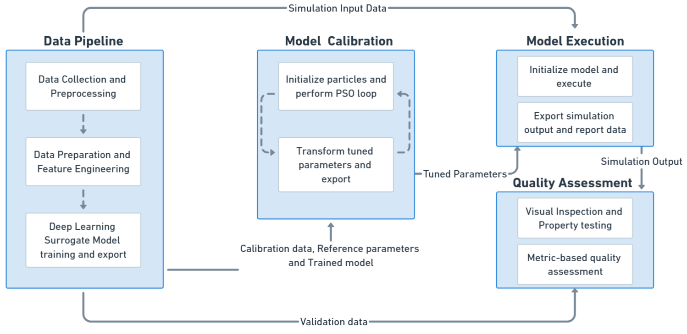

🚀 Data-Driven Framework for Agent-Based Pedestrian Modeling and Simulation
Overview:
This project presents a data-driven frameworkheterogeneous agent-based pedestrian modelsParticle Swarm Optimization (PSO) with a deep learning surrogate model

🔠Output & Results
The framework enables:
Efficient calibration of multiple agent parameters from real-world data.
Simulation outputs that closely match actual pedestrian velocities and trajectories.
Scalability for testing different environment layouts and crowd densities.
Validation results showed strong alignment between simulated and observed pedestrian flow patterns, reducing calibration runtime significantly compared to traditional brute-force methods.
📄 Details & Resources
For full methodology, and dataset details, please visit: